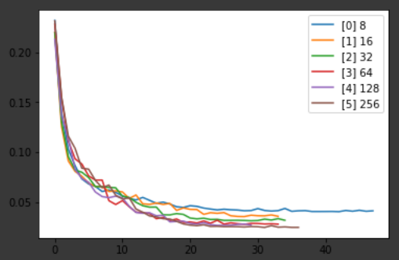
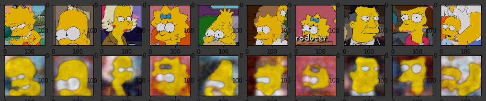

This experiment uses a convolutional autoencoder for performing principle component analysis on images of The Simpsons faces.
Source code can be found here:
Tensorflow is pretty intensive while predicting, so your browser might seem like it's freezing during prediction.
Press the button to start/stop the visualization (even if it seems frozen, it can tell you clicked it).
Loading...This time, I wanted to focus on hyper-parameter tuning. Instead of guessing hyper-parameters and then overfitting, instead I built methods for iteratively training different parameters, and then analyzing the results on validation data.
The image above shows the validation-loss between models with varying numbers of latent dimensions. Graphs like these were what helped me determine model parameters:
In the image below, the original drawing is on top, and the autoencoder's output is on bottom.
Because I focused on the validation loss, and didn't overfit, the final renderings are not as clear as I would want. To solve this, I believe I would simply need more data